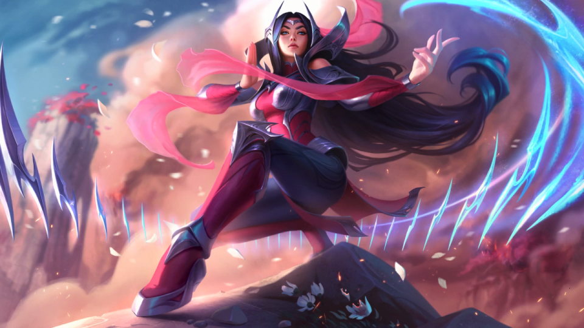
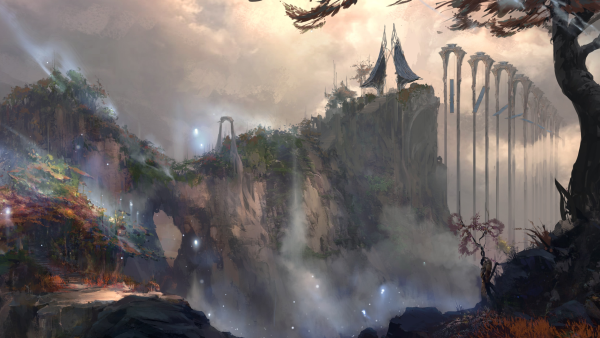
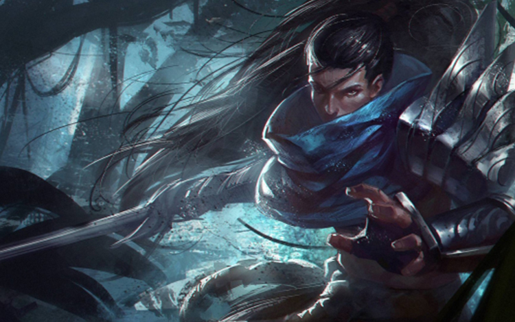

Từ một cô gái 14 tuổi đến đại tướng của Ionia…
“Có lúc tôi chỉ nhảy vì bản thân. Giờ, tôi nhảy vì Vùng Đất Đầu Tiên.” – Irelia
Irelia, tên đầy đủ là Xan Irelia, khởi đầu cũng chỉ là một cô gái trẻ, như mọi cô gái bình thường khác ở Ionia. Cô yêu thích múa lụa – một môn nghệ thuật truyền thống của người Ionia. Tuy nhiên, Irelia cảm nhận được có một liên kết thần bí trong điệu múa này với thế giới Tinh Linh của người Ionia, và cô khởi hành đến vùng đất thiêng – Thiên Phận Navori, để thụ giáo những nghệ nhân đáng kính nhất ở nơi đây.
Khi quân Noxus bắt đầu xâm lược Ionia, vùng đất của Irelia là một trong những nơi bọn chúng đổ bộ vào đầu tiên. Cha cô, cùng các anh trai đứng lên kháng cự, nhưng nhanh chóng thất bại, và chúng đã thảm sát toàn bộ gia đình của cô.
Irelia quay trở về làng khi nó đã trở thành doanh trại đóng quân của Noxus – dưới sự chỉ huy của tướng Duqal. Irelia nhìn thấy huy hiệu của gia tộc Xan nằm trong tay những tên lính Noxus, và cô đã liều lĩnh lao vào để giật lấy nó. Irelia ngay lập tức bị quân Noxus bắt giữ và Duqal ra lệnh đập nát chiếc huy hiệu. Trong lúc đó cô đã vô tình đánh thức một phần sức mạnh của mình, điều khiển những mảnh vỡ để hạ sát hai tên lính và chạy mất trong sự sững sờ của Duqal.Không còn nhà, Irelia quay trở lại Navori và gia nhập hàng ngũ quân kháng chiến, nhưng chỉ là để biểu diễn những giai điệu của cô trong các khu trại giữa rừng, nhằm bảo tồn nền văn hóa đang bị tàn phá dần của Ionia. Năm đó, Irelia mới 14 tuổi.
Cho đến một ngày, khi đội quân của Jericho Swain tấn công vào Thiên Phận và chiếm đóng nơi đây nhằm tạo ra một cái bẫy cho quân kháng chiến. Chính trong lúc này, bằng một cách nào đó, Irelia đã có thể giải phóng hoàn toàn tiềm năng của điệu kiếm vũ. Cô lao vào phá tan hàng ngũ của quân đội Noxus và chặt đứt cánh tay của ngài Nguyên Soái Noxus.
Chiến thắng ở Navori là bước ngoặt trong cuộc Đại Chiến Vệ Quốc, đã khiến Irelia được mọi người biết đến, và họ đã tôn cô lên làm lãnh đạo. Trong trận chiến ở Vịnh Dalu, Ionia cuối cùng cũng đã giết chết Duqal và báo thù cho gia đình cô.

Dù chiến tranh đã kết thúc, nhưng Ionia vẫn mãi mãi bị thay đổi. Không còn là một vùng đất bình yên như trước đây nữa, Vùng Đất Đầu Tiên giờ đây đã bị chia cắt với những phe phái thù nghịch đấu đá lẫn nhau liên miên. Irelia, vẫn đứng trên cương vị là thủ lĩnh của quân đội, nhưng lại cảm thấy không thoải mái với thứ quyền lực mà mình có được, và sự mong đợi của mọi người.
Khi còn nhỏ, Yasuo thường tin vào điều những người trong làng đồn đại về mình: trường hợp tốt nhất, sự tồn tại của anh là sơ suất của thần linh; trường hợp xấu nhất, anh là sai lầm không thể cứu vãn. Lời đồn nào cũng có một phần sự thật. Mẹ anh là một góa phụ một mình nuôi nấng con trai thì người đàn ông lẽ ra sẽ là cha Yasuo bước vào đời bà như cơn gió mùa thu. Và, khi mùa đông phủ tấm màn lạnh lẽo lên gia đình nhỏ ấy, ông cũng đi mất.

Theo chân Souma từ thời còn trẻ để làm một môn sinh kiêm vệ sĩ riêng. Chịu nhiều sự khó chịu của các đồng môn, Yasuo thể hiện được tài năng thiên bẩm, và trở thành môn đồ duy nhất suốt nhiều thế hệ thu hút được sự chú ý của Đại Sư Souma, người cuối cùng nắm giữ phong tuyệt kỹ huyền thoại. Ông già thấy rõ tiềm năng của Yasuo, nhưng dạy dỗ anh học trò ngỗ nghịch này không khác gì kiềm chế cơn gió xoáy cả. Ông thấy rõ tiềm năng của Yasuo và đã gửi gắm rất nhiều sự tin tưởng của mình vào người học trò này. Thế nhưng trận đánh vĩ đại ở Placidium xứ Navori với quân xâm lược Noxus đã mãi thay đổi số phận của anh, khi đại sư phụ anh phải chịu cái chết vì sai lầm do anh gây ra. Giờ đây với việc sở hữu phong tuyệt kĩ trứ danh, anh chính là môn đồ duy nhất và chính tông của đại sư phụ Souma.
Sau đó, Yasuo là kẻ trốn chạy trên mảnh đất Ionia tan hoang vì chiến tranh, tìm kiếm bất kỳ manh mối nào dẫn anh tới chỗ thủ phạm. Trong lúc đó, Yasuo vẫn bị những đồng đội săn đuổi, dồn vào những trận chiến sinh tử. Đây là cái giá anh sẵn lòng trả, cho đến khi người anh sợ nhất ra tay—anh trai Yone của anh. Trận đấu của họ diễn ra đầy danh dự. Khi hai lưỡi kiếm gặp nhau, Yone không thể chống lại và, chỉ bằng một đường kiếm, Yasuo đã hạ anh trai mình. Chẳng còn sư phụ hay anh em, Yasuo lang thang qua những ngọn núi, chìm trong cơn say cho quên nỗi đau và mất mát, như một thanh kiếm không còn vỏ.